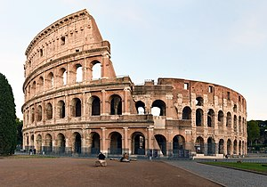

Arquitetura Classica
Arquitetura Grega: Caracterizada por colunas (dóricas, jônicas e coríntias), entablamentos e o uso de proporções harmoniosas. Exemplos incluem o Parthenon e o Templo de Apolo.
Arquitetura Romana: Evolução da arquitetura grega, com a introdução de arcos, abóbadas e cúpulas. Exemplos são o Coliseu e o Panteão.
